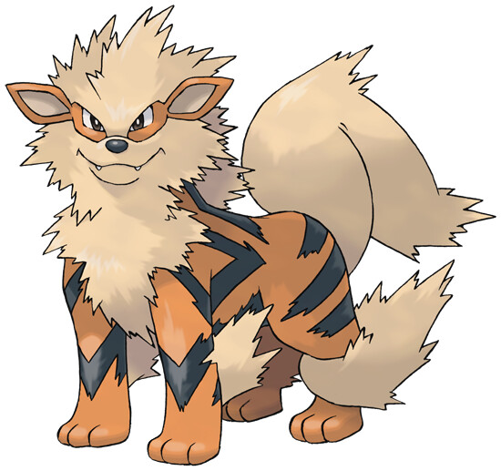

Os Melhores Pokemons de Cada Tipo
A variedade de bichinhos ao decorrer dos jogos de Pokemon é algo absurdo de grande, e muitas vezes, nós treinadores, possuimos dúvidas ao escolher os monstros ideais para a nossa equipe (ou vai me dizer que você nunca ficou em dúvida de qual inicial escolher para começar uma nova jornada?). Baseado nessas dúvidas que todo treinador passa, criei esse artigo para te ajudar a ver o melhor pokemon de cada tipo, vamos nessa?
Para ajudar todos os treinadores na captura, essa lista não incluirá os seguintes pokemons:
- Pokemons Lendários
- Pokemons Míticos
- Mega Evoluções
- Tapus de Alola
- Ultrabeasts (UB)
Tendo isso em mente, vamos para a lista, ordenando os tipos em ordem alfabetica
Aço - Corviknight

Número na Pokedex: 823
Tipo: Voador e Aço
Status Base
HP - 98
Ataque - 87
Defesa - 105
Sp. Ataque - 53
Sp. Defesa - 85
Velocidade - 67
Total - 495
Não apenas como um dos mais fortes de Aço, Corviknight também é um grande destaque para todos os tipos do jogo. De Aço e Voador, ele consegue se destacar entre diversos outros, como Normal, Planta, Voador, Psíquico, Inseto, Dragão, Aço e Fada. Além disso, ele também se destaca no competitivo pelo Mirror Armos, que impede que qualquer atributo dele seja reduzido, se tornando praticamente imune a qualquer tentativa de diminuir ataque ou defesa.
Água - Swampert

Número na Pokedex: 260
Tipo: Água e Terrestre
Status Base
HP - 100
Ataque - 110
Defesa - 90
Sp. Ataque - 85
Sp. Defesa - 90
Velocidade - 60
Total - 535
Um dos melhores iniciais de todas as gerações, sua junção de tipos de Água com Terrestre o torna imune contra a maioria dos ataques de tipo Elétrico (a maior fraqueza do tipo Água), o tornando o melhor do tipo Água, além de seus status notáveis
Dragão - Duraludon

Número na Pokedex: 884
Tipo: Aço e Dragão
Status Base
HP - 70
Ataque - 95
Defesa - 115
Sp. Ataque - 120
Sp. Defesa - 50
Velocidade - 85
Total - 535
Apesar de também ser do tipo Aço, Duralodon aparece como um dos mais poderosos do tipo Dragão. E a causa disso é a vantagem que possui contra praticamente todos os outros tipos de Pokémon do jogo. Isso porque ele aparece como resistente a Normal, Água, Elétrico, Voador, Psíquico, Inseto, Pedra e Aço. Além disso, conta com uma excelente defesa, suprindo o ataque mediano.
Elétrico - Jolteon

Número na Pokedex: 135
Tipo: Elétrico
Status Base
HP - 65
Ataque - 65
Defesa - 60
Sp. Ataque - 110
Sp. Defesa - 95
Velocidade - 130
Total - 525
Jolteon tem tudo para ser um bom Pokémon ofensivo. Para começar, sua Velocidade é extremamente boa, sendo o 6º Pokémon mais rápido do jogo, e seu Sp.Ataque também é bom. Ele também possui um ótimo tipo, que lhe dá apenas uma fraqueza em troca de três resistências, e uma de suas habilidades ainda transforma uma dessas resistências numa imunidade.
Fada - Togekiss

Número na Pokedex: 468
Tipo: Fada e Voador
Status Base
HP - 85
Ataque - 50
Defesa - 95
Sp. Ataque - 120
Sp. Defesa - 115
Velocidade - 80
Total - 545
Togepi apareceu na Geração 2 de Pokémon nas mãos de Misty, mas Togekiss, um dos principais do tipo Fada deu as caras apenas na Geração 4. Apesar de não possuir uma aparência que imponha medo, ele é um dos prediletos da maioria dos jogadores na cena competitiva, sendo o mais utilizado no VGC. E preferência por ele está ligada à sua utilidade como suporte e como ofensivo, além de contar com excelentes habilidades que são muito úteis durante os confrontos.
Fantasma - Dragapult

Número na Pokedex: 887
Tipo: Dragão e Fantasma
Status Base
HP - 88
Ataque - 120
Defesa - 75
Sp. Ataque - 100
Sp. Defesa - 75
Velocidade - 142
Total - 600
Também sendo apresentado na Geração 8, Dragapult já chegou ao Pokemon como um dos monstrinhos mais poderosos da franquia. A vantagem que possui conta diversos outros tipos o coloca como um dos melhores para ser utilizado no competitivo. No desenho, apareceu como propriedade de Leon, usado para derrubar um Gigantamax ao lado de Pikachu e Gengar, de Ash.
Fogo - Arcanaine
Número na Pokedex: 059
Tipo: Fogo
Status Base
HP - 90
Ataque - 110
Defesa - 80
Sp. Ataque - 100
Sp. Defesa - 80
Velocidade - 95
Total - 555
O Arcanine se popularizou logo na primeira geração como um dos principais Pokémon de Garry, primeiro grande rival de Ash nos animes. Entretanto, mesmo completando 25 anos de história, ele segue sendo um dos principais na cena competitiva. Entre jogadores do VGC, por exemplo, ele foi o segundo mais utilizado durante o ano passado, se destacando pelo ataque especial e comum.
Gelo - Darmanitan de Galar

Número na Pokedex: 555
Tipo: Gelo
Status Base
HP - 105
Ataque - 140
Defesa - 55
Sp. Ataque - 30
Sp. Defesa - 55
Velocidade - 95
Total - 480
Apesar de ser do tipo Fogo na sua evolução normal, a versão de Galar de Darmanitan aparece como um dos mais poderosos do tipo Gelo quando exposto à pedra de gelo. O grande poder dele é ligado diretamente ao ataque exclusivo de Darmanitan de Galar, chamado Gorila Tactics. Nele, os jogadores dobram o ataque físico, mas não permite com que ele troque de ataque caso fique em campo. Assim, servirá única e exclusivamente para bater nos adversários.
Inseto - Durant

Número na Pokedex: 632
Tipo: Inseto e Aço
Status Base
HP - 58
Ataque - 109
Defesa - 112
Sp. Ataque - 48
Sp. Defesa - 48
Velocidade - 109
Total - 484
Se Pokémon do tipo Inseto costuma parecer frágil, Durant chegou para ir contra essa teoria graças a sua junção com Aço. Justamente por isso, é o monstrinho mais poderoso desse tipo, sendo resistente a diversos outros que, em uma situação comum, poderiam causar dores de cabeça para os treinadores. Por ser de Aço, conta com resistência contra Normal, Planta, Gelo, Psíquico, Inseto, Dragão, Aço e Fada.
Lutador - Conkeldurr

Número na Pokedex: 534
Tipo: Lutador
Status Base
HP - 105
Ataque - 140
Defesa - 95
Sp. Ataque - 55
Sp. Defesa - 65
Velocidade - 45
Total - 505
Pouco conhecido entre os mais antigos da franquia, Conkeldurr surgiu na Geração 5 para ocupar o posto de melhor lutador até os dias atuais. No competitivo se destaca por possuir um ataque físico altíssimo, sendo devastador caso os jogadores não fiquem atentos com ele. Além disso, também já se fez presente no anime em uma luta de Bianca.
Normal - Snorlax

Número na Pokedex: 143
Tipo: Normal
Status Base
HP - 160
Ataque - 110
Defesa - 65
Sp. Ataque - 65
Sp. Defesa - 110
Velocidade - 30
Total - 540
Seja no anime ou nos games, Snorlax é um dos principais indicados para o tipo normal. Acordado apenas com uma flauta, ao ser capturado se torna uma máquina de causar estrago em diversas situações de jogo. Entretanto, peca pela velocidade e precisar ser utilizado com um parceiro para auxiliá-lo na cena competitiva.
Pedra - Tyranitar

Número na Pokedex: 248
Tipo: Pedra e Sombrio
Status Base
HP - 100
Ataque - 134
Defesa - 110
Sp. Ataque - 95
Sp. Defesa - 100
Velocidade - 61
Total - 600
No tipo pedra Tyranitar não poderia deixar de aparecer como um dos mais poderosos da franquia. Com status de pseudo-lendário, ele conta com stats de Pokémon lendário, apesar de não ser. Apesar de ter chegado na Geração 2, ele ainda é um dos mais usados até hoje na cena competitiva e casual, como Pokémon GO. Com um ataque e uma defesa extraordinária, ele se torna figurinha garantida entre os principais de diversos jogadores.
Planta - Venusaur

Número na Pokedex: 003
Tipo: Planta e Venenoso
Status Base
HP - 80
Ataque - 82
Defesa - 83
Sp. Ataque - 100
Sp. Defesa - 100
Velocidade - 80
Total - 525
Assim como seus companheiros iniciantes de Kanto, Charizard e Blastoise, Venusaur é um Pokémon notável que se manteve competitivamente viável por anos. Isso tem sido especialmente verdade nas gerações recentes, recebendo acesso à Hidden Ability Chlorophyll para aumentar sua velocidade na luz do sol junto com movimentos poderosos como Sludge Bomb e Earthquake.
Psíquico - Alakazam

Número na Pokedex: 065
Tipo: Psíquico
Status Base
HP - 55
Ataque - 50
Defesa - 45
Sp. Ataque - 135
Sp. Defesa - 95
Velocidade - 120
Total - 500
Nos jogos original Red, Blue e Yellow , Alakazam era apenas fraco para tipo Inseto e tinha uma estatística especial alta. Mesmo agora, onde os tipos Psíquicos não são mais os Pokémon mais poderosos, Alakazam ainda apresenta uma ameaça na batalha graças à sua Velocidade e Especial Ataque perversamente alto. Combinado com seu status como um dos Pokémon mais fortes da primeira geração, faz sentido que Alakazam permaneça popular.
Sombrio - Grimmsnarl

Número na Pokedex: 861
Tipo: Sombrio e Fada
Status Base
HP - 95
Ataque - 120
Defesa - 65
Sp. Ataque - 95
Sp. Defesa - 75
Velocidade - 60
Total - 510
Com uma aparência de botar medo em qualquer um, Grimmsnarl merece toda a fama que tem. Isso porque ele é o Pokémon sombrio mais poderosos de todas as gerações. Um dos mais recentes da lista, ele chegou na Gen 8 e pode ser utilizado tanto como suporte, por possuir imunidade a Prainster, mas também conta com um ataque
Terrestre - Excadrill

Número na Pokedex: 530
Tipo: Terrestre e Aço
Status Base
HP - 110
Ataque - 135
Defesa - 60
Sp. Ataque - 50
Sp. Defesa - 65
Velocidade - 88
Total - 508
Excadrill chegou no Pokémon na Gen 5, mas segue como um dos mais poderosos até hoje do tipo Terrestre, principalmente na cena competitiva. Quando combado com Tyranitar, por exemplo, formam uma dupla praticamente imbatível. Com uma velocidade espetacular, ele conta com a Mood Bracker que vai ignorar o levitate de alguns Pokémon, como o Rotom
Venenoso - Victreebel

Número na Pokedex: 071
Tipo: Planta e Venenoso
Status Base
HP - 80
Ataque - 105
Defesa - 65
Sp. Ataque - 100
Sp. Defesa - 70
Velocidade - 70
Total - 490
Um dos tipos menos populares de Pokémon, o Venenoso possui Victreebel como um dos mais poderosos da franquia. Conhecido por ser o monstrinho de Jame, um dos vilões da série. Por também ser do tipo Planta, ele consegue alguns bônus de defesa contra outros Pokémon, mas acaba sofrendo na hora de enfrentar monstrinhos do tipo Fogo, Psíquico e Voador.
Voador - Charizard

Número na Pokedex: 006
Tipo: Fogo e Voador
Status Base
HP - 78
Ataque - 84
Defesa - 78
Sp. Ataque - 109
Sp. Defesa - 85
Velocidade - 100
Total - 534
Um dos mais queridos da franquia, Charizard não apareceu como o mais poderoso no tipo Fogo, mas ganha claramente um espaço no tipo Voador. No competitivo, pode ser utilizado tanto como Gigantamax quanto Solar Power. Utilizado com outros Pokémon dessa lista, como o próprio Togekiss, ele se torna muito poderoso na cena competitiva, principalmente se o companheiro utilizar Follow Me para deixar o Charizard livre para atacar.